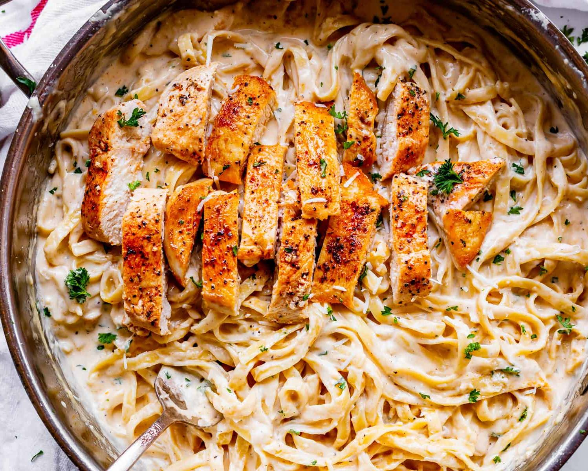

The Famous Chicken Alfredo

These are some pasta, more like Fettuccine.
But the magic goes on the sauce.
We moved to Italy, specifically to Rome in 1914
when the cook Alfredo Di Lelio prepared his wife
a dish of semolina fettuccine
and seasoned it with butter and grated
Parmigiano Reggiano cheese.
This delicious creation not only delighted his wife,
but also suggested
that he add them to the menu at her restaurant.
- 8 oz fettuccine pasta
- 2 boneless, skinless chicken breasts (sliced into strips)
- 2 tablespoons olive oil
- 3 cloves garlic (minced)
- 1 cup heavy cream
- 1/2 cup grated Parmesan cheese
- Salt and pepper to taste
- 2 tablespoons butter
- Fresh parsley (chopped, for garnish, optional)
Ingredients:
-
Boil a pot of water and cook the fettuccine pasta according to the package instructions. Drain and set aside.
-
Season the chicken strips with salt and pepper.
-
Heat 1 tablespoon of olive oil in a skillet over medium-high heat. Add the seasoned chicken strips and cook until they are no longer pink in the center, usually about 5-6 minutes per side. Once cooked, remove the chicken from the skillet and set aside.
-
In the same skillet, add another tablespoon of olive oil if needed. Sauté the minced garlic until fragrant, for about 1-2 minutes.
-
Lower the heat and pour in the heavy cream, stirring continuously. Allow it to simmer gently for about 2-3 minutes.
-
Gradually add the grated Parmesan cheese to the cream sauce, stirring constantly until the cheese melts and the sauce thickens.
-
Add the cooked fettuccine pasta to the sauce, tossing gently to coat the pasta evenly.
-
Add the cooked chicken strips back into the skillet with the pasta and sauce. Stir gently to combine everything together.
-
Add the butter to the skillet and continue to toss the pasta until the butter melts and incorporates into the sauce.
-
Once everything is well combined and heated through, remove from heat. Serve the Chicken Alfredo hot, garnished with chopped parsley if desired.